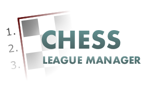

Chess League Manager
Der CLM ist die ideale Joomla!-Komponente zur Organisation von Schachligen und Turnieren.
- Open Source und kostenlos !
- Verwaltung von beliebig vielen Ligen / Staffeln / Turnieren
- Import von SQL- und SWT-Dateien
- Übernahme der Spieler / Vereine aus der DWZ Datenbank des DSB
- Hierarchische Nutzerstruktur mit verschiedenen Benutzerrollen
( Admin, DWZ-Wart, DV-Referent, Staffelleiter, Vereinsleiter, Mannschaftsführer etc.) - Eigene Mitgliederverwaltung ( Nachmelden, Löschen, Ändern von Spielerdaten möglich )
- Adressverwaltung der Vereinsadresse, sowie Spiellokal, Funktionäre und Homepage
- Berechnung von inoffizieller DWZ
- Export der Daten nach ELO-Base zur offiziellen DWZ Auswertung
- u.v.m